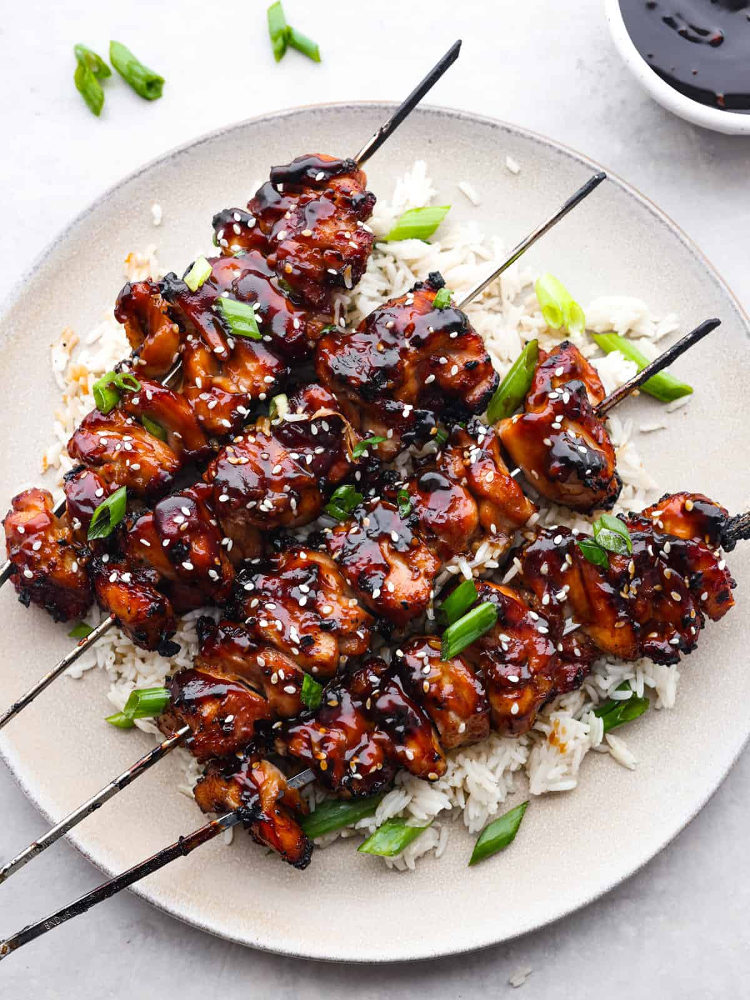

Yakitori (grilled chicken)
A traditional Japanese street food
Recipe:
500g chicken breast
2 tbsp soy sauce
1 tbsp honey
1 tbsp mirin
1 garlic clove, minced
Bamboo skewers
Cut the chicken into small pieces and place them
on skewers. Mix soy sauce, honey, mirin, and garlic
in a bowl. Brush the sauce over the chicken and grill
for 10–12 minutes, turning often until golden brown.